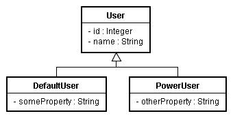
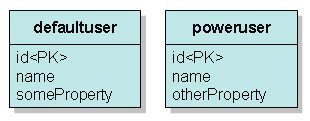

如果您採取的是物件模型的方式來設計程式，那麼繼承關係可能就會在您的程式設計中出現，然而關聯式資料庫的關聯模型與物件模型並不匹配，為了映射物件模型 與關聯模型，您可以採取三種策略，這邊先介紹最簡單的一種：Table per concrete class，也就是每一個類別就對應一個表格。
以實例來說明，如果您的程式中有以下的繼承關係：

以Table per concrete class的方式在關聯式資料庫中設計表格以作映射，就是直接對DefaultUser與PowerUser設計兩個表格與之對應，如下：

兩個表格沒有任何的關係，defaultuser與poweruser表格各自擁有id、name欄位，您可以如下建立表格：
create table DefaultUser (
id integer not null auto_increment,
name varchar(255),
someProperty varchar(255),
primary key (id)
)
create table PowerUser (
id integer not null auto_increment,
name varchar(255),
otherProperty varchar(255),
primary key (id)
)
id integer not null auto_increment,
name varchar(255),
someProperty varchar(255),
primary key (id)
)
create table PowerUser (
id integer not null auto_increment,
name varchar(255),
otherProperty varchar(255),
primary key (id)
)
而類別的設計如下：
- User.java
package onlyfun.caterpillar;
public abstract class User {
private Long id;
private String name;
public User() {}
public Long getId() {
return id;
}
public void setId(Long id) {
this.id = id;
}
public String getName() {
return name;
}
public void setName(String name) {
this.name = name;
}
}- DefaultUser.java
package onlyfun.caterpillar;
public class DefaultUser extends User {
private String someProperty;
public DefaultUser() {}
public String getSomeProperty() {
return someProperty;
}
public void setSomeProperty(String someProperty) {
this.someProperty = someProperty;
}
}- PowerUser.java
package onlyfun.caterpillar;
public class PowerUser extends User {
private String otherProperty;
public PowerUser() {}
public String getOtherProperty() {
return otherProperty;
}
public void setOtherProperty(String otherProperty) {
this.otherProperty = otherProperty;
}
}在映射文件方面分別如下：
- DefaultUser.hbm.xml
<?xml version="1.0" encoding="utf-8"?>
<!DOCTYPE hibernate-mapping
PUBLIC "-//Hibernate/Hibernate Mapping DTD 3.0//EN"
"http://hibernate.sourceforge.net/hibernate-mapping-3.0.dtd">
<hibernate-mapping>
<class name="onlyfun.caterpillar.DefaultUser">
<id name="id">
<generator class="native"/>
</id>
<property name="name"/>
<property name="someProperty"/>
</class>
</hibernate-mapping>- PowerUser.hbm.xml
<?xml version="1.0" encoding="utf-8"?>
<!DOCTYPE hibernate-mapping
PUBLIC "-//Hibernate/Hibernate Mapping DTD 3.0//EN"
"http://hibernate.sourceforge.net/hibernate-mapping-3.0.dtd">
<hibernate-mapping>
<class name="onlyfun.caterpillar.PowerUser">
<id name="id">
<generator class="native"/>
</id>
<property name="name"/>
<property name="otherProperty"/>
</class>
</hibernate-mapping>當然，別忘了在hibernate.cfg.xml中定義使用這兩個映射文件：
- hibernate.cfg.xml
<?xml version="1.0" encoding="utf-8"?>
<!DOCTYPE hibernate-configuration PUBLIC
"-//Hibernate/Hibernate Configuration DTD 3.0//EN"
"http://hibernate.sourceforge.net/hibernate-configuration-3.0.dtd">
<hibernate-configuration>
<session-factory>
...
<!-- 物件與資料庫表格映射文件 -->
<mapping resource="onlyfun/caterpillar/DefaultUser.hbm.xml"/>
<mapping resource="onlyfun/caterpillar/PowerUser.hbm.xml"/>
</session-factory>
</hibernate-configuration>在儲存物件時很簡單，例如分別儲存DefaultUser與PowerUser的實例：
DefaultUser defaultUser = new DefaultUser();
defaultUser.setName("Bush");
defaultUser.setSomeProperty("hu....hu...");
PowerUser powerUser = new PowerUser();
powerUser.setName("caterpillar");
powerUser.setOtherProperty("Bla...Bla...");
Session session = HibernateUtil.getSessionFactory().openSession();
Transaction tx = session.beginTransaction();
session.save(powerUser);
session.save(defaultUser);
tx.commit();
session.close();
defaultUser.setName("Bush");
defaultUser.setSomeProperty("hu....hu...");
PowerUser powerUser = new PowerUser();
powerUser.setName("caterpillar");
powerUser.setOtherProperty("Bla...Bla...");
Session session = HibernateUtil.getSessionFactory().openSession();
Transaction tx = session.beginTransaction();
session.save(powerUser);
session.save(defaultUser);
tx.commit();
session.close();
新增資料時，分別對兩個表格進行INSERT：
Hibernate:
insert
into
PowerUser
(name, otherProperty)
values
(?, ?)
Hibernate:
insert
into
DefaultUser
(name, someProperty)
values
(?, ?)
insert
into
PowerUser
(name, otherProperty)
values
(?, ?)
Hibernate:
insert
into
DefaultUser
(name, someProperty)
values
(?, ?)
至於查詢方面，視您想查詢哪個資料表，如果想同時查詢User類對應的所有資料，則可以如下：
Session session = HibernateUtil.getSessionFactory().openSession();
Query query = session.createQuery("from onlyfun.caterpillar.User");
Iterator iterator = query.list().iterator();
while(iterator.hasNext()) {
User user = (User) iterator.next();
System.out.println(user.getName());
}
session.close();
Query query = session.createQuery("from onlyfun.caterpillar.User");
Iterator iterator = query.list().iterator();
while(iterator.hasNext()) {
User user = (User) iterator.next();
System.out.println(user.getName());
}
session.close();
這個查詢會找出所有User之子類別所對應之資料，Hibernate實際上會使用以下的SQL進行查詢：
Hibernate:
select
poweruser0_.id as id1_,
poweruser0_.name as name1_,
poweruser0_.otherProperty as otherPro3_1_
from
PowerUser poweruser0_
Hibernate:
select
defaultuse0_.id as id0_,
defaultuse0_.name as name0_,
defaultuse0_.someProperty as someProp3_0_
from
DefaultUser defaultuse0_
select
poweruser0_.id as id1_,
poweruser0_.name as name1_,
poweruser0_.otherProperty as otherPro3_1_
from
PowerUser poweruser0_
Hibernate:
select
defaultuse0_.id as id0_,
defaultuse0_.name as name0_,
defaultuse0_.someProperty as someProp3_0_
from
DefaultUser defaultuse0_
也就是Hibernate自動判斷User的繼承關係，並分別對DefaultUser與PowerUser對應的表格進行查詢。
文件雖然很長，但其實不寫這份文件也可以，還記得 基本查詢 中曾經提過，如果您直接使用"from java.lang.Object"這樣的HQL查詢，所得到的結果是資料庫中所有的資料，因為Object是Java中所有類別的父類別，寫這份文件只 是在加強您的印象，瞭解繼承關係映射最基本的方式而已。
來討論一下這個實現繼承對應的問題，首先，因為關聯在資料庫中通常是透過外鍵來實現，分別將子類別對應至個別表格，將不利於實現關聯性，例如 多 對一，想想如果有其它物件關聯至User，那麼它的關聯映射如何實現？
再者，查詢時為了實現多型，如上面的查詢語法中可以看到的，必須分別對兩個表格進行查詢，再透過Hibernate來組合出多型的行為，而無法善用JOIN。
另外，每個表格中有一些語義相同的欄位，例如name欄位，當領域模型物件修改時，這些相同語義的欄位就要同時跟著修改，多個表格共用相同語義，將造成維護上的困難。
這個實現方式，基本上建議用於沒有關聯性，而且父類別將來不會修改的情況，或者不需要多型查詢的情況。